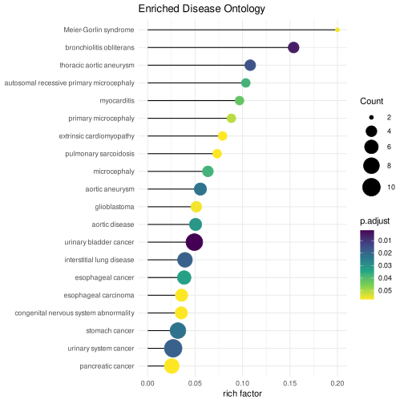
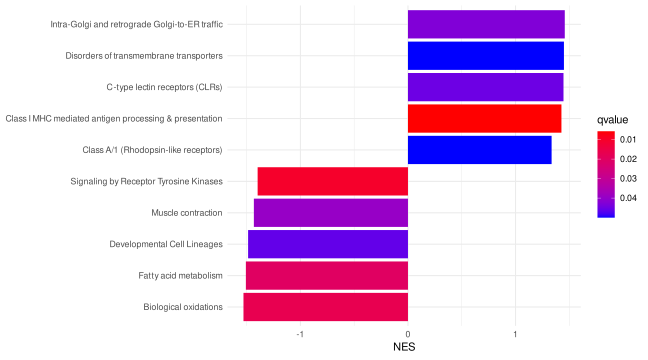

library(DOSE)
data(geneList)
de = names(geneList)[1:100]
x = enrichDO(de)19 Manipulating enrichment result objects
| Aspect | Result-object manipulation |
|---|---|
| Question | How can a result be filtered, ordered, summarized, or made readable without losing the gene–term structure needed downstream? |
| Input | enrichResult, gseaResult, or compareClusterResult objects plus explicit filtering rules. |
| Functions | as.data.frame(), dplyr verbs, geneInCategory(), setReadable(), and result-object accessors. |
| Output | A checked object or derived table for plotting/export; retain the original S4 object as the analysis record. |
| Limitations | A table alone does not reconstruct all object metadata or gene–term membership. Readable labels change display, not the underlying statistical test. |
Use this chapter after enrichment and before redundancy reduction, comparison, visualization, or interpretation. For input/background decisions, see the data contract.
19.1 filter
filter(x, p.adjust < .05, qvalue < 0.2)#
# over-representation test
#
#...@organism Homo sapiens
#...@ontology HDO
#...@keytype ENTREZID
#...@gene chr [1:100] "4312" "8318" "10874" "55143" "55388" "991" "6280" "2305" ...
#...pvalues adjusted by 'BH' with cutoff < 0.05
#...12 enriched terms found
'data.frame': 12 obs. of 13 variables:
$ ID : chr "DOID:11054" "DOID:2799" "DOID:14004" "DOID:3082" ...
$ Description : chr "urinary bladder cancer" "bronchiolitis obliterans" "thoracic aortic aneurysm" "interstitial lung disease" ...
$ GeneRatio : chr "9/58" "4/58" "4/58" "7/58" ...
$ BgRatio : chr "183/8188" "26/8188" "37/8188" "178/8188" ...
$ RichFactor : num 0.0492 0.1538 0.1081 0.0393 0.0269 ...
$ FoldEnrichment: num 6.94 21.72 15.26 5.55 3.79 ...
$ oddsRatio : num 8.4 27.3 18.18 6.39 4.47 ...
$ zScore : num 6.87 8.94 7.34 5.19 4.66 ...
$ pvalue : num 4.74e-06 3.02e-05 1.26e-04 2.41e-04 2.45e-04 ...
$ p.adjust : num 0.00182 0.00579 0.0161 0.01885 0.01885 ...
$ qvalue : num 0.000616 0.001964 0.005457 0.00639 0.00639 ...
$ geneID : chr "332/6279/6280/6241/2146/4312/983/7153/6790" "3002/6373/3627/4283" "4321/4312/3627/4283" "3002/8685/6373/4312/3627/7153/4283" ...
$ Count : int 9 4 4 7 10 8 5 5 6 4 ...
#...Citation
Guangchuang Yu, Li-Gen Wang, Guang-Rong Yan, Qing-Yu He. DOSE: an R/Bioconductor package for Disease Ontology Semantic and Enrichment analysis. Bioinformatics. 2015, 31(4):608-609 19.2 arrange
mutate(x, geneRatio = parse_ratio(GeneRatio)) %>%
arrange(desc(geneRatio))#
# over-representation test
#
#...@organism Homo sapiens
#...@ontology HDO
#...@keytype ENTREZID
#...@gene chr [1:100] "4312" "8318" "10874" "55143" "55388" "991" "6280" "2305" ...
#...pvalues adjusted by 'BH' with cutoff < 0.05
#...12 enriched terms found
'data.frame': 12 obs. of 14 variables:
$ ID : chr "DOID:3996" "DOID:11054" "DOID:10534" "DOID:3082" ...
$ Description : chr "urinary system cancer" "urinary bladder cancer" "stomach cancer" "interstitial lung disease" ...
$ GeneRatio : chr "10/58" "9/58" "8/58" "7/58" ...
$ BgRatio : chr "372/8188" "183/8188" "251/8188" "178/8188" ...
$ RichFactor : num 0.0269 0.0492 0.0319 0.0393 0.0385 ...
$ FoldEnrichment: num 3.79 6.94 4.5 5.55 5.43 ...
$ oddsRatio : num 4.47 8.4 5.19 6.39 6.14 ...
$ zScore : num 4.66 6.87 4.76 5.19 4.72 ...
$ pvalue : num 2.45e-04 4.74e-06 3.55e-04 2.41e-04 7.76e-04 ...
$ p.adjust : num 0.01885 0.00182 0.02269 0.01885 0.03312 ...
$ qvalue : num 0.00639 0.000616 0.007692 0.00639 0.011226 ...
$ geneID : chr "4321/332/6279/6280/6241/2146/4312/983/7153/6790" "332/6279/6280/6241/2146/4312/983/7153/6790" "8140/332/259266/2146/81930/4312/10403/2305" "3002/8685/6373/4312/3627/7153/4283" ...
$ Count : int 10 9 8 7 6 5 5 4 4 4 ...
$ geneRatio : num 0.172 0.155 0.138 0.121 0.103 ...
#...Citation
Guangchuang Yu, Li-Gen Wang, Guang-Rong Yan, Qing-Yu He. DOSE: an R/Bioconductor package for Disease Ontology Semantic and Enrichment analysis. Bioinformatics. 2015, 31(4):608-609 19.3 select
select(x, -geneID) %>% head ID Description GeneRatio BgRatio RichFactor
DOID:11054 DOID:11054 urinary bladder cancer 9/58 183/8188 0.04918033
DOID:2799 DOID:2799 bronchiolitis obliterans 4/58 26/8188 0.15384615
DOID:14004 DOID:14004 thoracic aortic aneurysm 4/58 37/8188 0.10810811
DOID:3082 DOID:3082 interstitial lung disease 7/58 178/8188 0.03932584
DOID:3996 DOID:3996 urinary system cancer 10/58 372/8188 0.02688172
DOID:10534 DOID:10534 stomach cancer 8/58 251/8188 0.03187251
FoldEnrichment oddsRatio zScore pvalue p.adjust
DOID:11054 6.942906 8.398311 6.867123 4.736458e-06 0.001818800
DOID:2799 21.718833 27.299663 8.936857 3.017163e-05 0.005792952
DOID:14004 15.261883 18.175084 7.343505 1.257762e-04 0.016099354
DOID:3082 5.551724 6.388373 5.185621 2.406122e-04 0.018851197
DOID:3996 3.794957 4.470534 4.659996 2.454583e-04 0.018851197
DOID:10534 4.499519 5.193086 4.756069 3.545694e-04 0.022692445
qvalue Count
DOID:11054 0.0006164933 9
DOID:2799 0.0019635562 4
DOID:14004 0.0054569732 4
DOID:3082 0.0063897269 7
DOID:3996 0.0063897269 10
DOID:10534 0.0076917411 819.4 mutate
# k/M
y <- mutate(x, richFactor = Count / as.numeric(sub("/\\d+", "", BgRatio)))
y#
# over-representation test
#
#...@organism Homo sapiens
#...@ontology HDO
#...@keytype ENTREZID
#...@gene chr [1:100] "4312" "8318" "10874" "55143" "55388" "991" "6280" "2305" ...
#...pvalues adjusted by 'BH' with cutoff < 0.05
#...12 enriched terms found
'data.frame': 12 obs. of 14 variables:
$ ID : chr "DOID:11054" "DOID:2799" "DOID:14004" "DOID:3082" ...
$ Description : chr "urinary bladder cancer" "bronchiolitis obliterans" "thoracic aortic aneurysm" "interstitial lung disease" ...
$ GeneRatio : chr "9/58" "4/58" "4/58" "7/58" ...
$ BgRatio : chr "183/8188" "26/8188" "37/8188" "178/8188" ...
$ RichFactor : num 0.0492 0.1538 0.1081 0.0393 0.0269 ...
$ FoldEnrichment: num 6.94 21.72 15.26 5.55 3.79 ...
$ oddsRatio : num 8.4 27.3 18.18 6.39 4.47 ...
$ zScore : num 6.87 8.94 7.34 5.19 4.66 ...
$ pvalue : num 4.74e-06 3.02e-05 1.26e-04 2.41e-04 2.45e-04 ...
$ p.adjust : num 0.00182 0.00579 0.0161 0.01885 0.01885 ...
$ qvalue : num 0.000616 0.001964 0.005457 0.00639 0.00639 ...
$ geneID : chr "332/6279/6280/6241/2146/4312/983/7153/6790" "3002/6373/3627/4283" "4321/4312/3627/4283" "3002/8685/6373/4312/3627/7153/4283" ...
$ Count : int 9 4 4 7 10 8 5 5 6 4 ...
$ richFactor : num 0.0492 0.1538 0.1081 0.0393 0.0269 ...
#...Citation
Guangchuang Yu, Li-Gen Wang, Guang-Rong Yan, Qing-Yu He. DOSE: an R/Bioconductor package for Disease Ontology Semantic and Enrichment analysis. Bioinformatics. 2015, 31(4):608-609 library(ggplot2)
library(forcats)
library(enrichplot)
ggplot(y, showCategory = 20,
aes(richFactor, fct_reorder(Description, richFactor))) +
geom_segment(aes(xend=0, yend = Description)) +
geom_point(aes(color=p.adjust, size = Count)) +
scale_color_viridis_c(guide=guide_colorbar(reverse=TRUE)) +
scale_size_continuous(range=c(2, 10)) +
theme_minimal() +
xlab("rich factor") +
ylab(NULL) +
ggtitle("Enriched Disease Ontology")
A very similar concept is Fold Enrichment, which is defined as the ratio of two proportions, (k/n) / (M/N):
mutate(x, FoldEnrichment = parse_ratio(GeneRatio) / parse_ratio(BgRatio))Note that an enrichment result already carries these columns, so the mutate() calls above are demonstrations of the arithmetic rather than something you have to do:
head(as.data.frame(x)[, c("ID", "GeneRatio", "BgRatio", "RichFactor", "FoldEnrichment", "oddsRatio")])oddsRatio is provided alongside them and is a different kind of effect size: FoldEnrichment compares two proportions, whereas the odds ratio is the effect size the hypergeometric (Fisher) test itself is built on. It comes from the 2x2 table
in gene set not in gene set
in gene list k n - k
not in list M - k N - M - n + kso oddsRatio = k (N - M - n + k) / ((n - k) (M - k)). Because this is the plain cross-product odds ratio, it differs slightly from fisher.test()$estimate, which reports the conditional MLE (the two are close but not identical).
Here, the calculation of rich factor and fold enrichment is only for demonstration purposes. The enrichplot package provides the dotplot function that can directly visualize these values without adding them to the enrichment result.
19.5 slice
We can use slice to choose rows by their ordinal position in the enrichment result. Grouped result use the ordinal position with the group.
In the following example, a GSEA result of Reactome pathway was sorted by the absolute values of NES and the result was grouped by the sign of NES. We then extracted first 5 rows of each groups. The result was displayed in Figure 19.2.
library(ReactomePA)
x <- gsePathway(geneList)
y <- arrange(x, abs(NES)) %>%
group_by(sign(NES)) %>%
slice(1:5)
library(forcats)
library(ggplot2)
library(enrichplot)
ggplot(y, aes(NES, fct_reorder(Description, NES), fill=qvalue), showCategory=10) +
geom_col(orientation='y') +
scale_fill_continuous(low='red', high='blue', guide=guide_colorbar(reverse=TRUE)) +
theme_minimal() + ylab(NULL)
19.6 summarise
library(ggplot2)
pbar <- function(x) {
pi=seq(0, 1, length.out=11)
mutate(x, pp = cut(p.adjust, pi)) |>
group_by(pp) |>
summarise(cnt = n()) |>
ggplot(aes(pp, cnt)) + geom_col() +
theme_minimal() +
xlab("p value intervals") +
ylab("Frequency") +
ggtitle("p value distribution")
}
x <- enrichDO(de, pvalueCutoff=1, qvalueCutoff=1)
set.seed(2020-09-10)
random_genes <- sample(names(geneList), 100)
y <- enrichDO(random_genes, pvalueCutoff=1, qvalueCutoff=1)
p1 <- pbar(x)
p2 <- pbar(y)
aplot::plot_list(p1, p2, ncol=1, tag_levels = 'A')19.7 Alternative filtering approaches
While this chapter focuses on using dplyr verbs for manipulating enrichment results, users can also employ base R operations for filtering. For detailed information on using [, [[, and $ operators with the asis parameter to preserve enrichment result objects, please refer to the Data frame interface section in the Useful utilities chapter.
The dplyr approach provides a more readable and chainable syntax for complex filtering operations, while base R operators offer familiarity for users accustomed to traditional data frame manipulation.
19.8 Next steps
- After filtering or sorting, reduce redundancy with semantic similarity.
- Keep the result class for visualization and interpretation.